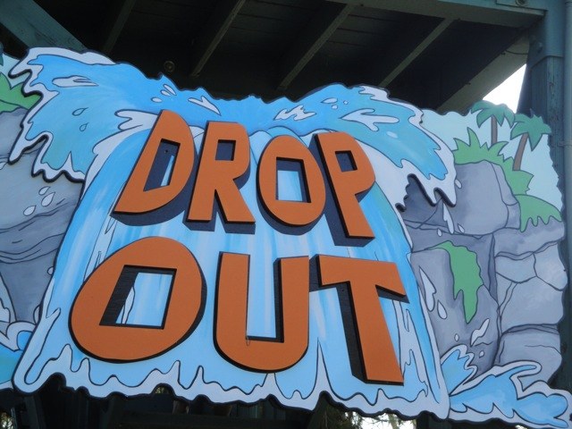

| |

Drop Out Photos
We're here at Raging Waters, where we'll be reveiwing Drop Out. This was the Official Drop Slide of Raging Waters. However, the stairs aren't that high, so you think to yourself "Surely it's not that small." And while it is on a hill, so it's higher than the stairs you climb. But still. Everything comparing it to Venom Drop is bullsh*t. Venom Drop is much bigger. This is about the same size as Tidal Wave Tower at Soak City Palm Springs. It even has the same terrain usage as Tidal Wave Tower. And like Tidal Wave Tower, it's a very fun slide, and was without a doubt, my second favorite slide at Raging Waters. However, the ride itself may be gone, but don't worry. They're just replacing it with a Trap Door Slide. Same concept of a drop slide, only now with a trap door. Gotta admit. I like this upgrade.
7/10
Location: Raging Waters
Opened: I honestly don't know.
Built by: White Water Slides
Last Ridden: July 21, 2010
Drop Out Photos



|